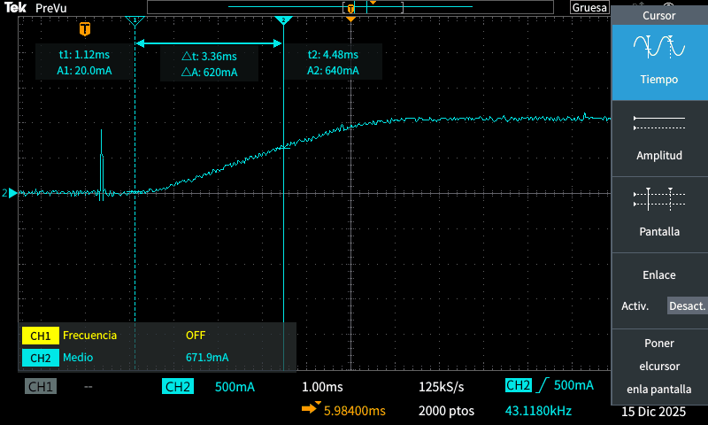
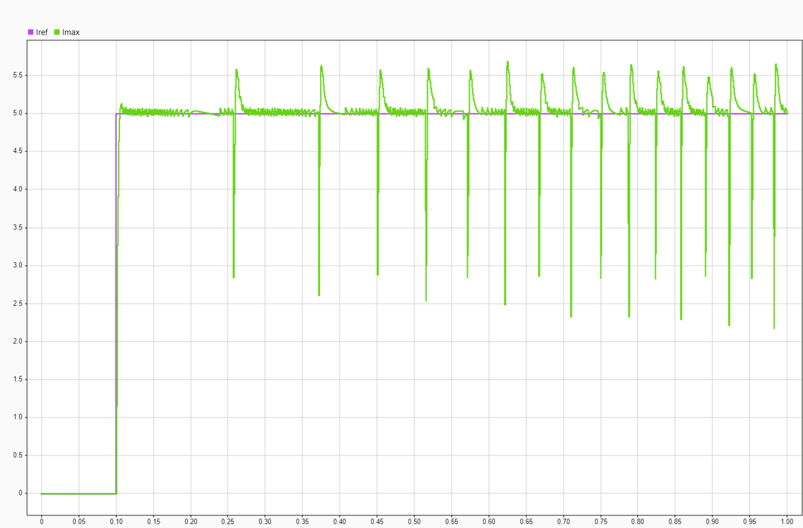
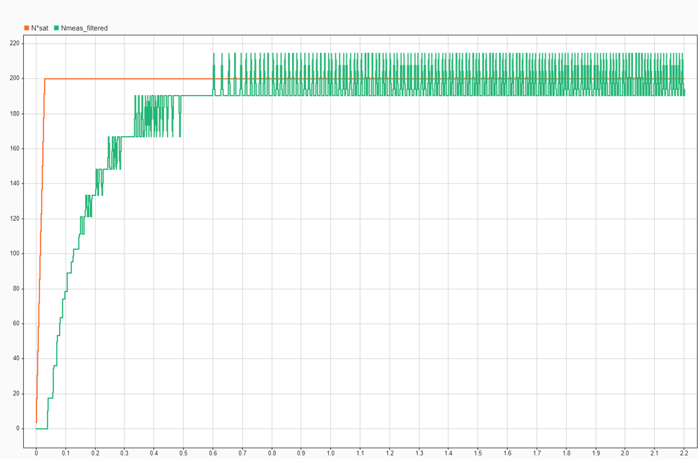

BLDC motor control for an electric scooter
Each magnet boundary that passes a sensor gives an edge: 3 sensors × 2 per pole pair × 15 pole pairs = 90 edges per turn.
Third-year team project at Mondragon, five students. My part was the drive. I designed and sized the measurement boards, using techniques to minimise electromagnetic noise, characterised the motor and implemented the current and speed control on an STM32.
The charts on this page use the motor parameters I measured. Kp and the filter cut-off can be changed to see the effect on the loop.
Scope of my work
The hub motor and the inverter (Infineon IFX007T shield) were given. The control between them ran on an STM32: two PI controllers in cascade, a back-EMF feed-forward, a low-pass filter on the measured current and a speed estimate from the Hall sensors.
I also designed and sized the measurement boards for the voltages, the currents and the Hall signals. To reduce electromagnetic noise I used twisted wiring, minimum loop areas between signal and ground, and a separate ground for each Hall output. The battery charger was designed by other members of the team.
Motor characterisation
The first step was to measure the motor parameters on the bench to build a model of it. For R and L the rotor is locked, so there is no back-EMF. A voltage step then gives a first-order current response, and the time constant is the time to reach 63.2 % of the final value.
The measured value was τ = 3.36 ms, and L = R·τ. The same test on the Simulink motor model gave 3.37 ms. The cursor can be moved along the curve.

Current loop tuning
The current loop is a PI controller. With the integral time equal to the motor time constant, Ti = L/R = 3.36 ms, the controller zero cancels the motor pole and the closed loop becomes first order, with τcl = L/Kp and no overshoot.
I chose τcl = 1 ms, ten times the period of the 10 kHz inverter, which gives Kp = 1.06.
The control first ran at 10 kHz. The speed loop measured time by counting the calls to the control function, and that count fluctuated and dropped as the scooter went faster: the STM32 could not finish the calculations in 0.1 ms. We checked it with the professor and reduced the control rate to 2 kHz (0.5 ms). With that sampling, the loop overshoots above Kp ≈ 2 and becomes unstable above Kp ≈ 3.9.
On the scooter I kept Kp and made Ti twenty times larger (67 ms). The response is slower, but more stable with the noise in the current measurement.
Values
Current filter and phase margin
The phase current measured with the Hall sensors still had noise, so I added a first-order low-pass filter on the measurement. The filter adds phase lag inside the loop and reduces the phase margin.
Without the filter the phase margin is 90°. I chose the lowest cut-off frequency that kept an acceptable margin: 250 rad/s, with 28° at 470 rad/s. In the tests, a lower cut-off made the loop unstable.
Values
Speed measurement and speed loop
The speed is calculated from the Hall sensors, without an encoder. The three sensors give 6 edges per electrical cycle, so with 15 pole pairs there are 90 edges per turn. At each edge the STM32 calculates ω = (2π/90)/Δt and keeps the value until the next edge.
The result is a stepped speed signal. At 200 rpm there is a new value every 3.3 ms; at 20 rpm, only every 33 ms.
The speed controller is a PI with acceleration feed-forward and anti-windup (Kp = 0.0177 A/rpm, Ti = 2.0 s). Its output is the current reference of the current loop.
Values
Results
In the complete Simulink model, the current follows a 5 A step within a few milliseconds and recovers after each commutation. The speed reaches 200 rpm in about 0.6 s, with the stepped measurement described above.
On the scooter, the drive was tested on the floor: it could be driven, accelerated and braked correctly.



Looking for a Bachelor's thesis in automation or robotics
In Västra Götaland, January to June 2027. I'm doing an Erasmus+ double degree between Mondragon Unibertsitatea and the University of Skövde.